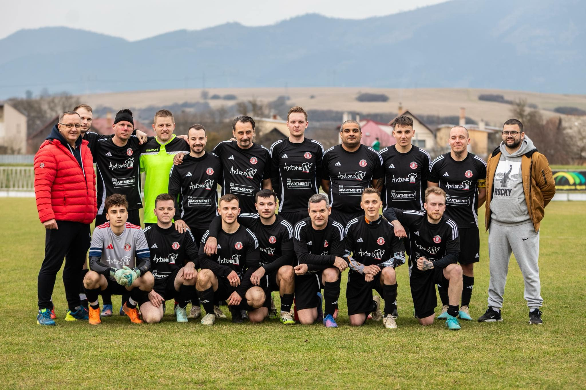

OFK SLOVENSKÝ RAJ
SPIŠSKÉ TOMÁŠOVCE
SPIŠSKÉ TOMÁŠOVCE


| Poradie | Tím | Zápasy | Výhry | Remízy | Prehry | Skóre | Body |
|---|---|---|---|---|---|---|---|
| 1. | FK Olcnava | 22 | 19 | 1 | 2 | 91:20 | 58 |
| 2. | Tj Slovan Smižany | 23 | 19 | 1 | 3 | 85:21 | 58 |
| 3. | Slovan FO Markušovce | 22 | 16 | 3 | 3 | 68:26 | 51 |
| 4. | TJ Lokomotíva Margecany | 23 | 14 | 4 | 5 | 57:30 | 46 |
| 5. | 1. ŠK TATRAN Spišské Vlachy | 22 | 9 | 5 | 8 | 41:42 | 32 |
| 6. | FK POKROK SEZ Krompachy | 23 | 10 | 1 | 12 | 49:47 | 31 |
| 7. | TJ Baník v Mníšku nad Hnilcom | 23 | 9 | 4 | 10 | 33:35 | 31 |
| 8. | FK 56 Iliašovce | 23 | 9 | 4 | 10 | 35:42 | 31 |
| 9. | ŠK Breznovica Letanovce | 22 | 7 | 7 | 8 | 41:64 | 28 |
| 10. | FK Slovan Helcmanovce | 23 | 8 | 3 | 12 | 44:60 | 27 |
| 11. | OKŠ Spišský Hrušov | 22 | 5 | 5 | 12 | 34:62 | 20 |
| 12. | TJ Spartak Bystrany | 22 | 6 | 2 | 14 | 45:72 | 20 |
| 13. | OFK Matejovce Nad Hornádom | 22 | 5 | 3 | 14 | 25:53 | 18 |
| 14. | OFK Slovenský Raj Spišské Tomášovce | 22 | 4 | 4 | 14 | 27:62 | 16 |
| 15. | Futbalový klub Spišská Nová Ves B | 22 | 3 | 3 | 16 | 31:70 | 12 |
| 16. | OŠK Slovinky (Odstúpené) | 0 | 0 | 0 | 0 | 0:0 | 0 |